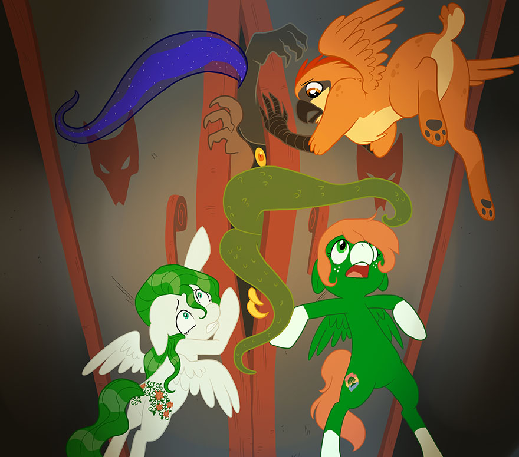

Bestiary & Rogues’ Gallery
The Tartarus Bestiary
Equestria is far from a safe and carefree land; from its dark jungles and forests, to its arid deserts and snow-capped peaks, many dangerous creatures await those who adventure in the wide, wide world. This section contains information on some of the creatures which characters in S3E might encounter.
Cerberus
The guardian of Tartarus, this powerful beast serves as warden of Equestria’s greatest evils.
Cerberus looks like a fierce black bulldog, dwarfing ponies with his house-sized frame. Two extra heads, identical to the first, grow out of the neck, each with a maw filled with razor sharp teeth. The beast exudes a stench of decay, hinting at his otherworldly origins (or that he rarely has the chance to bathe).
Cerberus is, primarily, the guardian of Tartarus. As such, the beast is well-trained in keeping anything from entering or leaving his domain. In addition to training, Cerberus also has the strength and skill to back up his charge. All three heads of Cerberus can operate independently, and each head is possessed of incredible strength. The dog’s body is also incredibly strong, and capable of withstanding the huge amounts of force the denizens of Tartarus are able to dish out.
As the guardian of Tartarus, Cerberus’ goals and tactics are simple; keep anything from getting in, or more importantly, getting out—by any means necessary. However, while Cerberus is a giant, legendary canine, he is still just a canine. Rarely, Cerberus will be distracted from his post, appearing in the wild. When this happens, all bets are off. Without the gates of Tartarus to guard, Cerberus will wander aimlessly until led back to Tartarus. Getting him there, however, can be a challenge in and of itself.
Cerberus is intensely powerful, although he can be easily distracted with food or toys, just like any other dog. However, distracting Cerberus is a dangerous prospect, especially distracting him from guarding the gates of Tartarus. Pulling the guardian away from the gates opens the door for any number of horrors to erupt from Tartarus. Even worse is the plan of getting past Cerberus to get into Tartarus, which, in addition to the unknown horrors of the abyss, involves another confrontation with Cerberus on the way back out again.
Changeling
Not much is known about the enigmatic Changelings, save that they can transform into nearly any other pony-like form and use that form to feed off the energy of those their victim loves and are loved by in return.
The most frightful aspect of a Changeling is its ability to assume the appearance of others. However, a Changeling's default form is quite gruesome in and of itself. In this form, the Changeling looks like a black Unicorn, with a few exceptions. The legs of a Changeling are riddled with holes, leading to an eerie, incomplete look. On the Changeling's back, a thick layer of carapace conceals a set of translucent, insectoid wings. Finally, the Changeling's eyes glow with a strange, hollow blue and lack a pupil or iris.
The first, and most notable, ability of Changelings is that of transformation. A Changeling can, in the blink of an eye, transform themselves into a perfect copy of almost anypony who is roughly their same size, right down to their victim's voice. While transformed, a Changeling can feed off of the love their victim had for others, as well as the love showered upon them by unsuspecting friends and family. Through enough of this feeding, a Changeling can become almost unstoppably powerful.
Even without transforming, a Changeling still poses a potent threat. While not quite as magical as Unicorns, Changelings still contain a bit of magic in their horns. While attacking, Changelings often supplement dive-bomb attacks by coating their horns in sickly green fire, adding to the power of their ramming charges. Particularly powerful Changelings, such as Queen Chrysalis, can manifest more varied magical effects.
Finally, Changelings are reasonably skilled fliers, thanks to the wings on their back. While the beetle-like wings make them less maneuverable than the more sturdy-winged Pegasi and Griffons, Changelings use those wings to great effect in setting up aerial charges and dive-bombs.
The tactics of a Changeling are varied, and depend on the situation they are in. A Changeling will, if at all possible, attempt to blend in with a community and gain power from its love before making any sort of overt show of aggression. If caught in its true form, a Changeling will rapidly try to change form, becoming family, friends, or loved ones of their opponent (provided the Changeling knows what they look like), or even mimicking the opponent themselves in order to unnerve them. If possible, Changelings attack in large groups, using numbers and swarm tactics to their advantage.
If given enough space, Changelings will take to the air on their wings, setting up aerial dive-bombs in order to knock senseless anypony on the ground caught in the way. Despite the lack of maneuverability in their wings, Changelings can reach very high speeds while moving in a straight line.
All of this, of course, assumes that the Changeling is caught in its true form at all. While disguised, a Changeling will attempt to divide and conquer, sowing seeds of distrust and attempting to discredit anypony who suspects that the Changeling may not be who they claim to be, all while surrounding themselves in love and friendship, feeding on the unsuspecting ponies who care for them.
Changelings, at first glance, seem an almost impossible foe to overcome. Between their flight, limited magical ability, shapeshifting, and the ability to grow more powerful the longer they go unnoticed and feed, a Changeling poses a terrible threat to the wellbeing of everypony around them. However, the Changeling carries a few weaknesses which can help ponies overcome their myriad strengths.
First, a single Changeling, caught by itself, is physically unimpressive. Without the chance to grow stronger from feeding on love, a single Changeling poses little threat against brave ponies dedicated to stopping it. Additionally, due to the hive mentality of Changeling colonies, Changelings are usually not terribly bright, occasionally making obvious mistakes which could tip off the observant to their true nature.
Lastly, though a Changeling feeds primarily on love, they do not seem to truly understand it. To most Changelings, love is merely a source of food and power, not the powerful force it truly is. This lack of understanding leads to a dismissal of the power of love; a mistake which can, and has, cost Changelings an otherwise assured victory.
Cockatrice
Half-bird, half-reptile, and feared for its petrifying stare, the Cockatrice is a danger to any living creature who makes the mistake of looking into its eyes. Cockatrices largely inhabit the Everfree Forest—yet another reason to fear that peculiar place.
A Cockatrice has the head and upper body of a chicken, and the disproportionately large lower body of a snake. Even though the creature has small wings and feet resembling those of a chicken placed near the head, they serve little purpose; it is too heavy to fly, and the feet are lifted off of the ground by the snake body most of the time. The only way of telling apart a real chicken head and the head of a Cockatrice is its red, gleaming eyes (though this can be easily overlooked).
A Cockatrice’s most distinctive and fearsome ability is, of course, its petrifying stare. When an unfortunate creature looks into a Cockatrice’s eyes, it turns to stone in a matter of seconds. Only the Cockatrice itself can break the curse, and convincing it to cooperate is not an easy task. Some believe that there are other ways, but if that’s true, they are hidden in long-forgotten books.
A Cockatrice will hide in tall grass and bushes, only peeking out with its chicken head, and wait for a victim. If a creature that is too big or strong to qualify as a meal stumbles upon the snake-shaped beast, the Cockatrice will attempt to lock eyes with it and turn it into stone instead.
The stare of a Cockatrice is deadly, but it can be easily avoided by closing one’s eyes or looking at the ground—provided, of course, that one noticed what it is they are dealing with. While it’s not that easy to tell apart a normal chicken from a hiding Cockatrice, a thinking pony can easily notice the fake just by asking one simple question: “What is a single chicken doing in the dark and spooky Everfree Forest anyway?”
Diamond Dog
Diamond Dogs are the gem-loving, dog-like creatures who live in complex tunnel systems they dig in the undergrounds of Equestria. While harming anypony isn’t exactly one of their priorities, they won’t hold back from any course of action which would help them attain their goals.
Big eyes, a huge mouth with very sharp teeth, and pointed ears are just some of a Diamond Dog’s distinctive features. There are many races of Diamond Dog, but unlike ponies, the differences are purely cosmetic. Some are bigger, some are smaller, some are wider, some are slimmer, and their fur comes in a great variety of color, but all have one feature in common: long, muscular arms. Diamond Dogs walk in a semi-upright stance on their hind legs, and their front paws are adapted to grabbing things, even having opposable thumbs. If their ‘hands’ are free, they support themselves with them just like a gorilla would.
In addition to the good hearing and sense of smell all canines usually have, Diamond Dogs also possess strong arms, which they use to dig their tunnels and mine for gemstones. Their claws make it possible to dig through very hard ground and even split rocks.
Diamond Dogs love gems—not only their valuable namesake stones, but all sorts of gemstones. Be it sapphires, rubies, emeralds, or amethysts, the Diamond Dogs want them and will do anything to get them. To this end they mainly by creating extensive mines and excavations. They have no magic or supernatural senses with which to find them, so they often dig randomly or by instinct. If there were a better method available for finding their treasure, they would surely try to seize it.
Diamond dogs have sensitive ears, so a good way to scare them off is to make a lot of unbearable noises (whining in a high tone proves to be exceptionally effective). Also, Diamond Dogs would do anything to get their paws on gemstones, so they can be easily used as a diversion—like throwing a stick for a regular dog—if one is ready to sacrifice a gem or two.
Dragon
These legendary winged lizards come in many forms, and all of them are creatures to be feared. A single Dragon can endanger whole towns simply by snoring smoke. A particularly mighty Dragon could destroy a whole country if he had reason to, but thankfully, most adult Dragons mind their own business and are not hostile unless provoked.
Dragons differ in color, size, types of scales, and many other aspects. While a young Dragon can be smaller than a pony, when they grow up they can flatten whole buildings with a single stomp. While the shape and color of a Dragon’s scales differ from Dragon to Dragon, mostly these features are inherited.
A Dragon’s most evident advantage is their size and strength; there are only a few other living creatures that can match a Dragon’s raw power. Most Dragons (with a few exceptions) have powerful wings which allow them to fly at great height and speed. Dragons are also fireproof; they can withstand the hottest flame and even swim in lava without any injury. Another deadly feature of a Dragon are its sturdy teeth, able to crush gemstones and even diamonds (the preferred diet of a Dragon) with ease.
Thankfully, most Dragons only care about sleeping and eating. Adult Dragons leave their families and search for a cave to live in, then begin to gather a hoard of treasure—mostly gold and gems. While the gems serve as a food source for the Dragon, why they also hoard gold is unknown; it’s said that gold may be comfortable for a Dragon to sleep on—or perhaps they just like shiny things.
Dragons are fearsome beasts, and fighting them directly is a very bad idea. A whole army would be needed for such a feat, and even then it would be difficult to say the least. The best way to deal with a Dragon problem is to persuade or trick them into leaving or changing their ways.
Fruitbat
Fruitbats are small, colorful flying mammals which feed on fruit the color of their own fur. While not really threatening, they can surely be a troublesome distraction if one crosses their path. There are several types of Fruitbats, each representing a color of the rainbow, and each type has its own unique features resembling a fruit, such as ears that look like leaves, or claws like twigs and sticks.
Unlike normal bats, Fruitbats can see well, and don’t need to make use of echolocation. Their color perception is even better than most other animals. In addition, their size and low weight makes them quick and agile fliers; catching a Fruitbat would be hard even for the swiftest Pegasi.
Fruitbats live in fruit trees (or sometimes bushes) and usually only leave their hiding place when they get hungry. If the colorful Fruitbats get startled by something, a whole swarm may immediately take flight and either move to another location or just return at a later time. Fruitbats always fly in a certain pattern, forming a straight, wide line and naturally grouping according to color, the overall formation resembling a giant rainbow. They aren’t vicious or aggressive, but they will throw themselves headlong at any food source they lay eyes on.
Fruitbats are not hostile, so the best option is just to avoid startling them in the first place; but if a swarm is on the horizon, the best option is just to hide beneath something or lay low on the ground. As long as somepony doesn’t have fruit with them, the Fruibtats will likely leave them alone.
Hydra
A Hydra is a five-headed beast living near swamps and bogs. It is one of the more aggressive beasts, and will attack anypony as soon as it has the chance to.
A Hydra has five heads with very long necks on top of a big round body and a tail at its back. Brown-yellow scales cover its body from head to toe, and it has three pairs of red spikes on each head. It has two strong legs and no arms—though its multiple heads more than make up for that. The five heads, which act independently from one another, make the Hydra practically five enemies in one. The heads themselves are, in comparison to the clumsy lower body, quite agile, mainly because of their flexible necks.
Despite its enormous size, a Hydra can hide itself in the muddy waters of swamps so that only one head will stick out, but that much can be hard to notice due to its natural body color. Hydras sit most of the time hidden in their swamps and waiting for prey to come by. When any suitable prey is found, the Hydra will wait for the perfect time to strike and then try to take its victim by surprise. If that doesn’t work, the Hydra will chase after its target. Even though all the heads share one stomach and it makes no difference which head actually devours the prey, the heads often compete against each other in catching it, as only one will actually get to taste it.
Everypony should be cautious when near swamps, because there is no better way to handle a Hydra than to not fight it in the first place. When engaged in battle with a Hydra, it’s best to take advantage of the fact that the heads each act on their own and do not always get along. A good solution is to either tangle the heads with each other, or to provoke one of them to act against the others.
Manticore
One of the many wonders of the Everfree Forest, and easily one of the most dangerous ones, the Manticore is a hybrid of several animals’ unique strengths and abilities. How such an unbelievable crossbreed came to be in the first place is a mystery.
A Manticore has the body of a lion, with large bat wings and a scorpion stinger at the end of a long tail. Its head also has the long, pointed ears of a bat. Its forelegs are much stronger than its hind legs, built more like those of a bear. Overall, a Manticore has a light yellow-brown coat of fur with a red mane. Its stinger, as well as the inside of its wings, are also red.
A Manticore has the strength of a lion, complete with its sharp teeth, which can easily break branches and bones. The stinger on its tail contains a potent paralyzing poison that can immobilize any foe smaller than the Manticore itself, though it is far less effective on larger targets. Lastly, while a Manticore’s bat-like wings are too small to actually let the creature fly, they do allow it to jump higher and over longer distances than it would be able to otherwise.
For all their deadly advantages, Manticores are generally peaceful creatures by nature. They live in the forest and spent most of their time protecting their territory and their children or hunting for food. If a potential threat invades its territory, a Manticore will try to chase it away rather than take more drastic action; but if somepony just won’t leave it alone, or endangers its young in any way, then it is more than capable of showing its true, fearsome power.
Parasprite
The Parasprite, not much more in appearance than a cute insect-winged ball with large eyes, may look harmless—but looks can be deceiving. Only a few know of their true destructive potential; if left unchecked, a swarm of Parasprites can strip a region of all its food in a relatively short span of time.
Parasprites look like colorful spheres roughly the size of a tennis ball, with two pairs of insectoid wings on their back and four very tiny legs. Both their bodies and their eyes vary in color from creature to creature; only their wings and legs are always the same (white and black, respectively). This, and the fact that they always seem to be smiling, makes them look cute and harmless—which often leads to making the mistake of taking them in and treating them as a pet.
The two most distinctive features of a Parasprite are their enormous appetite and their incredible rate of reproduction. A single Parasprite can easily devour a hundred times its own weight in food and subsequently replicate itself almost immediately. It’s method of reproduction is quite unique (if more than a little disgusting): parasprites vomit a small fuzzy ball, roughly the size of their own bodies, which forms into a new, completely functional Parasprite after a few seconds.
A Parasprite’s goals are simple: to eat as much as possible, as fast as possible, and then reproduce. While a single Parasprite may be practically harmless (as long as it’s controlled), a swarm of the pesky little creatures can purge a village—or even a whole city—of everything edible in a matter of hours.
Parasprites are small, fast, and always growing in numbers. Trying to get rid of a swarm is very difficult, but there is at least one sure-fire method to do so. For some unknown reason, Parasprites respond to music. Any musically-skilled individual can control a swarm of Parasprites by playing the right tune. Whether it must be a specific song, or if any rhythmic song will do as long as it’s played right, is unknown.
Phoenix
When healthy, a Phoenix is a large bird, slightly smaller than a pony, with resplendent, fire-like plumage. The chest feathers of a male Phoenix create a small flame-like pattern absent in the female, while the female has a series of three small antennae in place of a crest. Toward the end of a Phoenix’s cycle of life, its feathers begin to molt, giving it a sickly, ragged appearance until it finally bursts into flame to renew itself and begin its next life.
The most famous ability of the Phoenix is this undying nature. When a Phoenix is ready to die, the bird immolates itself, leaving behind only ash. Soon after, however, the ash reconstitutes into a new, fully-grown Phoenix.
Additionally, a Phoenix has some limited control over fire. When enraged, a Phoenix’s body and wings will catch fire, making them more threatening to predators. In addition, a Phoenix can emit a blinding light from its body, a tactic which it often uses to throw off pursuers.
Due to their immortal nature, Phoenixes possess a great deal of intellect garnered from their many, many years of life. While a fully-grown Phoenix is functionally immortal, a hatchling is not as resilient. Having not come into their magical abilities, nor lived long enough to accrue wisdom, Phoenix chicks need to be protected by their parents. Additionally, as a Phoenix’s rebirth does not happen until adulthood, chicks are far more vulnerable to than their parents—though they are quick and agile even from an early age, and can often evade and confound predators. As such, Phoenixes guard their nests carefully from intruders, and chase away any who threaten them with their flaming wings. If pursued, a Phoenix will use its ability to create light to blind its pursuer and use the opportunity to escape. In general, Phoenixes are not aggressive; any hostile action a Phoenix takes is usually in self-defense or to protect somepony they care for.
Quarray Eel
Inhabiting the cracks in quarries, canyons, and other rocky places, Quarray Eels are a fearsome threat to any who would venture into places such as Ghastly Gorge.
A Quarray Eel is a massive beast, which hides its magenta body in the cracks of canyon walls. A large purple tuft of fin sits on top of the eel’s head, and its mouth is lined with razor sharp teeth. A Quarray Eel has little in the way of abilities, save for its incredible strength and speed, given its massive size. The beast can erupt from out of a canyon wall with lightning precision, with only the most agile foe being able to escape its jaws.
The primary tactic of a Quarray Eel is to wait inside their holes, eagerly awaiting anything edible to wander into the range of the eel’s bite. Quarray Eels fight like crocodiles, lashing out quickly from hiding, hoping to ensnare any prey before it leaves their range. If provoked, Quarray Eels fight to defend their homes, but rarely travel out of their holes. Their size leads them to be unlikely to be able to leave the cave they reside in; if potential prey can escape the range of the eel’s body, there is not much more the eel can do but snap irritatedly at it. Quarray Eels also possess relatively low intelligence, making them fairly easy to outsmart.
Timber Wolf
Living in the Everfree Forest, Timber Wolves are canine beasts which hunt for weaker creatures in packs of five to ten individuals. Folk tales say that, because they share a strong connection to the trees around them, when these wooden wolves howl at the moon, the Zap Apple Harvest is coming.
Timberwolves look like piles of sticks and branches somehow brought to life; they are nearly twice the size of an adult pony (and even larger in their ‘combined’ form, explained later). Their long wooden snouts are filled with lines of sharp teeth which resemble small palisades inside their mouth, and right above them is a pair of sinister, dark yellow glowing eyes.
Despite their crude and ungraceful look, Timberwolves are very fast and dexterous beasts, able to outrun all but the swiftest prey. Like other types of wolves, Timberwolves have an outstanding sense of smell as well as hearing, and use both to hunt. However, perhaps their most powerful advantage is that they cannot be truly defeated except by fire. Even when smashed to pieces, a pack of Timberwolves are capable of reassembling their individual bodies—or even combining into a single, massive Timberwolf.
Timberwolves resemble dry sticks and branches, which makes them hard to spot in the forest. A lying and/or hiding Timberwolf is almost impossible to distinguish from a pile of wood—a fact they often use to their advantage. A pack of Timberwolves will often hide in plain sight, waiting for the right moment to ambush their prey. If their first assault doesn’t work, they will then pursue their prey up to the edge of their territory (and sometimes beyond). Combining their bodies to create a larger, composite Timberwolf is generally their last resort.
Due to their sensitive ears, Timberwolves are vulnerable to loud noises and will try to run away from them if not especially hungry or provoked; but what truly makes a Timberwolf panic (and could be called its one major weakness) is—for obvious reasons—fire. When confronted with fire, be it magical or mundane, even an entire pack of Timberwolves will scramble and try to escape as fast as possible, abandoning any attempt to catch the prey. Thus, while spending the night in the Everfree Forest (or any forest, for that matter), it is always wise to sleep near a campfire.
Ursa Minor
An Ursa Minor is a bear-shaped ‘constellation beast,’ one of only two types known to exist. It inhabits dark caves all around Equestria, most often somewhere deep in a forest. Even though an Ursa Minor is a powerful and terrifying creature, it is a young cub in comparison to its fully-grown counterpart, the Ursa Major.
Like all constellation beasts, an Ursa Minor looks like somepony cut a fragment of the night sky and shaped an animal out of it. They have a semi-transparent body with twinkling stars all over it, and can be a truly beautiful sight—at a distance. Some of the stars are bigger and brighter and form the constellation the beasts are named after. An Ursa Minor is huge; twice the height and width of an average house.
Like all beasts of great size, an Ursa Minor is very strong. It can crush a small building with its paw, and if given time and reason it could completely devastate a small village. The Ursa Minor is also very tough—mainly because of its sheer body mass.
Ursa Minors are technically young children, and as such they spend most of their time sleeping in the safety of their cave with their mother. They rarely leave their cave on their own, though they can easily be provoked into doing so. While wandering through a forest, it is more likely that travelers will come across an Ursa Major than an Ursa Minor (which is not necessarily a good thing).
Even though they are big and scary, Ursa Minors are essentially babies, and behave as such; they can be lulled to sleep by a soothing song, or easily distracted by anything they find interesting. Aggressive behaviour is strongly discouraged, for it only enrages an Ursa Minor more; even if it is driven off, it may call for its mother—and that’s when the real trouble starts.
Ursa Major
Many tend to mistake an Ursa Minor for an Ursa Major; and it’s no wonder—after all, when an Ursa Minor is so large it can smash a house with its paw, nopony imagines there could be something even bigger.
The Ursa Majors are the true giants, some of them growing to the size of a castle. Their bodies look like a fragment of the night sky given form, complete with shining stars and the constellation which ‘bears’ their name, much like their younger counterparts. Their color is different from an Ursa Minor’s, however, being closer to purple than blue.
An Ursa Major’s size can reach the point where they could easily go paw-to-claw with a fully-grown dragon, and like those great reptiles, it would take a whole army to deal with such a beast’s rampage. A single swipe of its paw could deal a mortal blow to the architecture of even a well-fortified castle, and an individual struck by such power would be instantly knocked unconscious (or, very probably, much worse). With their titanic size also comes incredible toughness, and in fact an Ursa Major wouldn’t even notice most mundane attempts to harm it any more than a normal bear would notice the buzzing of flies.
Normally, Ursa Majors are quite passive (thank goodness); they are largely content to stay in their caves and take care of their cubs. This is their highest priority—even though their ‘babies’ are strong enough to defend themselves, if something were to happen to their young, an Ursa Major could get furious and go on a truly catastrophic rampage.
A rampaging Ursa Major will generally try to simply trample smaller creatures with their enormous paws; while even a single hit would be critical, the advantage smaller creatures have is their relative speed and ability to evade—after all, great size does not often come with great speed or agility. The probability that an Ursa Major will attack a given settlement is very low, but if it occurs, it’s generally useless to stand and fight. The safest course would be to evacuate and either wait for it to calm down, or hope for the help of some other being powerful enough to stand a chance against such a force.
Windigo
Fierce spirits of hatred and cold from the dark ages of pony history, Windigoes are terrible beasts which thrive on conflict and sap the warmth, literally and figuratively, from the lands they haunt.
A Windigo is equine in appearance, taking the form of a large ghostly horse with a wispy tail of wind. The eyes of the beast glow with a pale, unearthly blue light which, along with their howl, can be the only way to identify them on a cold, winter’s night.
The Windigo is famous for its ability to freeze the hearts of those in strife. A Windigo feeds on hatred and becomes more powerful by spreading anger and contention. Where Windigoes go, winter follows. Snow and ice cover the lands that Windigoes inhabit, killing off plant life and crops, causing famine, discontent, and unending winter. When Windigoes are near, they project an aura of unease, leading to arguments and brewing resentment in anypony affected by it. When somepony’s heart is truly cold towards those around it, the Windigo’s final attack begins. By freezing the heart of its victim, a Windigo can seal a pony forever in a block of ice, preserving their hatred as sustenance until the Windigo is destroyed or driven away from the area.
A Windigo is an incredibly dangerous foe, largely because of the subtlety of its actions and the self-absorbed nature of the hatred and anger they inspire; by the time most victims realize that something is wrong, it is often nearly too late to fight back. The weakness of a Windigo is found in friendship and compassion, however. A Windigo feeds on hatred, and can be repelled by camaraderie and warm feelings, particularly if the Fire of Friendship can be summoned. Cities all over Equestria typically hold Hearth’s Warming Eve pageants in order to create the Fire of Friendship. This stands as both as a symbolic affirmation of their dedication to one another and as an ancient rite to ward away the threat of the Windigo. The more isolated areas of Equestria, however, particularly in the frozen north, are still sometimes vulnerable to the effects of these terrifying creatures.
The Rogues’ Gallery
In addition to having its fair share of dangerous creatures, Equestria is also home to several good old-fashioned villains, which can serve as adversaries in an Episode. Not all adversaries are grand and world-threatening, of course; some are smaller in scale, and not all of them are truly evil. This section contains information on some of the adversaries which characters in S3E might encounter.
Ahuizotl
Ahuizotl is a huge blue beast, dressed in Aztec decor. Two beady eyes peer out from the end of his snout where nostrils should be, and a prehensile tail topped with a strange humanoid hand waves eerily from behind his back.
Ahuizotl is a cunning beast, capable of sophisticated speech and devious traps. He is familiar with most lost places, and no remote jungle ruin is beyond his reach. Additionally, Ahuizotl has an impressive command of animals, often employing several fierce jungle cats (as well as house cats) to do his bidding.
Ahuizotl strives for riches and relics from a forgotten age, and finds that the easy way of acquiring such treasures is to take it from tired adventurers as they haul their prize back to civilization. After trailing these adventurers, Ahuizotl sets up ambushes outside dungeons and ruins, seeking to pillage any loot brought out of the place with his minions. Once the loot is secured, Ahuizotl cares little for the unfortunate souls he robbed, often leaving them at the mercy of the wilds or death traps left within the most dangerous ruins.
While Ahuizotl is cunning, strong, and stealthy, he has one notable weakness: Ahuizotl is in love with his own villainy. Whether it be precious time spent monologuing, leaving his minions to deal with enemies, or leaving defeated foes in unwatched, unattended, slowly moving traps, Ahuizotl is prone to classic Bond-villain levels of error. With a bit of skill, luck, and talent, an adventurer can outsmart Ahuizotl, or even escape from his traps to turn the tables.
Prince Blueblood
Prince Blueblood is a handsome white Unicorn with an expertly styled blond mane. He bears a compass rose as his Cutie Mark, possibly to represent his unerring stride. The stallion carries himself with a weight of royalty, where each move he makes is deliberate and chosen. The first thing almost anypony would notice about the prince is the effort put into making him look his best.
Prince Blueblood is powerful not because of personal strength, but because of station. Similarly, he is dangerous not from any sort of ill will, but rather a complete lack of social grace. Blueblood wields his title like a club, relying on the fact that nopony will call him out to make up for any lack of tact. This fear is fairly well-founded, as the prince is not afraid to use his significant political power to ruin any who would offend him, should their slight be egregious enough to rouse him from his life of leisure.
Normally, Blueblood doesn’t possess much in the way of goals. After all, what does a pony need when he already has everything? However, Blueblood’s habit of acting like a spoiled child may cause him to make enemies, or cause him to declare others as enemies if they have offended him in some way—even accidentally. Blueblood carries enough political power and influence to keep somepony who has offended him from setting hoof in Canterlot ever again, except for the exceptionally skilled in political maneuvering or somepony who has their own friends in high places.
Blueblood’s biggest strength and his biggest weakness are one and the same: the fact that he wields far more clout than he can responsibly use. While trying to overcome the prince in a direct political showdown is nearly impossible, there are ways around his influence. For one, although nopony will directly acknowledge the prince’s arrogance, ponies will be inclined to help take the prince down a peg—provided they won’t be targeted for it.
Queen Chrysalis
In her true form, Chrysalis is a terrifying sight. The Changeling Queen looks much like a regular Changeling in appearance, with a strange mix of equine and insectoid features. A gnarled, fragile-looking black horn erupts from her forehead, and her legs and wings are riddled with holes, creating an off-putting appearance. Chrysalis’ stringy green mane falls flat over her head, with large green eyes peering out from underneath.
Chrysalis possesses much the same power as her Changeling minions; shapeshifting, flight, magic, and the ability to feed on love. Any power a regular Changeling has, however, Chrysalis has a more powerful version. Of particular note is Chrysalis’ ability to feed on love. When fully fed on a stream of love, Chrysalis is nigh-unstoppable, capable of toppling even Princess Celestia in direct magical combat.
Added to this is Chrysalis’ outstanding aptitude for shapeshifting. While all Changelings can shapeshift, none can match the impeccable quality with which Chrysalis can assume the identities of others. Where the average Changeling can create a passable facade, Chrysalis creates a copy nearly indistinguishable from reality, capable of fooling even her target’s closest companions.
In addition to the standard Changeling goal of feeding on love herself, Chrysalis possesses a motherly instinct to feed her hive’s macabre hunger. To accomplish their goal, Chrysalis leads raids on civilizations ripe with love, subverting them and conquering them to be left as food supplies for her Changeling horde. Chrysalis often infiltrates a civilization, wearing away at its defenses while her hive waits on her signal. When the time is right, Chrysalis releases the swarm, overrunning cities with a hunger to match the most ravenous Parasprite swarm.
Chrysalis’ biggest strengths are her shapeshifting and her swarm, both of which must be handled in different and careful ways. Chrysalis’ shapeshifting is almost impossible to notice. Almost. While her imitation is physically flawless, the Changeling Queen has been known to slip up on occasion, missing a cue that might lead to her unmasking (particularly if the victim of her impersonation if found).
As for the swarm, while Chrysalis herself has a keen mind for strategy, such advanced thinking is somewhat beyond the standard Changeling grunt, who is typically content to bash its head against a wall until the wall falls. Chrysalis also tends to get caught up in the thrill of conquest and victory, allowing subtle ponies to act without her noticing—an oversight that could easily cost her the battle and her meal.
Diamond Tiara & Silver Spoon
Diamond Tiara is a pink filly with a periwinkle and white striped mane, and a cutie mark of a crown like her namesake. Silver Spoon is a gray filly with white hair and similarly named with her cutie mark. The trait both of them share is the sense of arrogance and entitlement each one radiates. They are thus often encountered together.
Being young, school-age fillies, Diamond Tiara and Silver Spoon pose almost no threat to an adult pony; but to a foal, particularly a blank flank, the pair can be the most frightening part of any day. While physically unimpressive, these two fillies rule the school in Ponyville, and will make life miserable for anypony they think worthy of scorn (which usually includes anypony who doesn’t bow down to them).
Diamond Tiara and Silver Spoon have very simple motives: tear down the self esteem of others in order to increase their own. They are nothing more than common schoolyard bullies, using manipulation and social pressure instead of brute force.
Diamond Tiara and Silver Spoon work differently depending on the age of those facing them. Against a group of young, school-age colts and fillies, the pair try to intimidate, scorn, and otherwise harass their way to getting whatever petty thing they want. As such, they can be defeated largely by standing up to them. By not letting themselves get pushed around, Diamond and Silver’s victims gain strength.
For adults, it is an entirely different matter. While the pair—as mentioned—hold no sway outside the schoolyard, what power they hold there can leak disturbingly into the town at large. Whether it be a personal issue, such as a younger sibling or child coming home in tears and unwilling to go to school, or something far greater, such as an ill-conceived revenge attempt during a town parade, these two bullies carry a frighteningly large potential for causing disaster.
Discord
Discord is the one known example of a mysterious species known as a Draconequus, which, as the name suggests, is a bizarre cross-breed of draconic and equine features. While he is a powerful shapeshifter capable of taking on nearly any form that suits him, Discord prefers assembling himself as a hodgepodge mix of several creatures, sporting a goatlike head, griffon claws, lion’s paws, hooves, horns, and wings. The only aspect that carries over no matter what form he takes is a set of eerie, yellow and red eyes.
As the primal spirit of chaos and disharmony, Discord’s abilities border on the omnipotent. The draconequus’ talent for causing chaos is unmatched: animating objects, defying gravity, changing the weather in natural and unnatural ways, twisting the bodies and minds of animals, and even effortlessly controlling the sun and moon are only a small sample of his true power. In short, if it can cause chaos in any way, shape, or form, odds are Discord has a way of doing it.
Discord’s main goals were to reclaim his hold on the world and reshape it back into its primal chaos. With his near limitless power and the ability to turn friends against each other by social and magical means, this would be a trifling task without the intervention of the Elements of Harmony. However, Discord’s motives seem to have changed. He recently apologised for his previous, evil ways and joined with Princess Celestia for some unknown cause. However, all is not necessarily well. After all, before, Discord was strangely predictable: cause chaos, take over the world. Now that he no longer aims for that goal, he has become even more unnervingly chaotic. After all, where’s the fun in making sense?
Discord’s strength is seemingly unlimited, although he does carry a few weak points. First, the draconequus is a prideful creature, letting would-be opponents swing futilely at him before shooing them away. However, with the right magical punch from the right source, such as the Elements of Harmony, that one chance to strike might be all that’s needed. Additionally, Discord has been known to take favor, and even show compassion, towards those who treat him with respect and kindness, and may just possibly be willing to put the needs of others above his own—for a little while, anyway.
The Flim Flam Brothers
Flim and Flam are nearly identical Unicorn stallions, with only Flam’s mustache and their different cutie marks to differentiate them. Both brothers have a yellow coat with red and white manes, often covered by straw hats and barbershop vests which give them a trustworthy, All-Equestrian look. Flim is clean shaven, with a green apple slice for a cutie mark, while Flam is mustachioed, with a red apple missing a slice for his mark.
The Flim Flam Brothers are consummate conponies, capable of turning a crowd to their cause with ease and trapping unwary ponies into shady deals and impossible-to-win competitions. More dangerous, however, is the twins’ legitimate genius when it comes to magical technology, creating amazing magic-fueled marvels that could—in the right hooves—improve the lives of ponies everywhere. Unfortunately, the brothers’ hooves are anything but the right ones.
The Flim Flam Brothers’ goals are simple: ride into town, con some bits out of the population there, and get out before anypony is the wiser. Typically, the pair will arrive with some new invention and a con to cut costs or get materials for the device for free. However, anything the brothers can soak from the town is fair game. If challenged, the brothers will gladly put their machine to the test, hoping to show the legitimacy of their invention.
The Flim Flam Brothers’ greatest strength is their ability to work a crowd. Within minutes, the pair can get an entire town on their side, even rallying against one of their own. While most of this ability stems from Flim and Flam’s excellent charisma and stage presence, a good portion comes from the legitimate impressiveness of their machines.
However, the brothers have a tendency to get overconfident with their machines, and should that confidence be shaken, the brothers crack under pressure. Fortunately, Flim and Flam know when the jig is up, and do not hesitate to make a swift exit (stage left) if the crowd turns against them.
Gilda
Gilda appears as most griffons do, with an eagle’s head planted on a lion’s body and strong feathered wings growing from her back. Her eyes are fierce, and her beak betrays a confident, almost cocky, smirk. She is a skilled flyer, on par with Rainbow Dash. Beyond that, Gilda has all the talents most griffons do: sharp eyes and equally-sharp claws. Gilda is also known for her supreme confidence, a talent which helps her strongarm her way through the less charismatic.
Gilda’s goals are simple: to get what she wants at any given time, stepping over whoever she needs to in order to reach it. Typically, she achieves this goal with bullying and intimidation, using her size, power, and raw charisma to cow whoever would stop her from taking what she wants, when she wants it.
Gilda possesses a unique combination of power and charisma that makes it very difficult for many ponies to stand up to her. However, this easy life makes Gilda somewhat complacent in her status as top dog. When a pony does stand up to her, Gilda is often unsure exactly how to proceed, short of more threats of violence. Additionally, Gilda does harbor some affection for Rainbow Dash as a friend, and might be able to see reason if Dash (or possibly anypony else who has managed to earn her respect) is the one to speak with her.
Nightmare Moon
Nightmare Moon is a tall, elegant black mare, with a slender frame concealed behind gleaming dark armor. A wispy mane infused with starlight flows through the top of her armored helm. Her eyes shine with a malevolent gleam, and each move she makes carries the weight of arrogance.
First and foremost, Nightmare Moon still holds the spirit of her true self, Princess Luna, within her. As such, Nightmare Moon possesses all the powers of her uncorrupted self, save for control over the Elements of Harmony. As an Alicorn, Nightmare Moon also possesses potent magical abilities, with significant control over all aspects of spellcasting.
Nightmare Moon is above all else haughty, and supremely confident in her ability to succeed. As such, she enjoys playing games with those who try and thwart her plans, attacking at range with her magic and avoiding direct confrontation until her enemies are upon her. If forced into a direct confrontation, Nightmare Moon prefers to fight her battles with social combat, using her own supreme confidence to sow the seeds of doubt in the minds of her enemies. Only when their wills are broken will Nightmare Moon resort to physical force.
Nightmare Moon is a powerful spellcaster, one of the most powerful in Equestria. Between her spells and the social graces learned from her time as royalty, Nightmare Moon is dangerous in both physical and social combat. To make matters worse, Nightmare Moon is an aspect of Princess Luna, and the mere fact of her existence removes Luna as a possible ally for dealing with the threat.
However, as the saying goes, the bigger they are, the harder they fall. Nightmare Moon’s power has made her proud, and prone to making mistakes. Despite her power, Nightmare Moon flaunts her skills, preferring to play with her enemies for far longer than is tactically sound, and monologuing when she really should be dealing the finishing blow. By taking advantage of these lapses in judgment, a clever group of friends could find a way to bring down the rogue Princess of the Moon.
King Sombra
King Sombra’s appearance varies, depending on his power. After being sealed away in antiquity, Sombra’s form appears more as a sentient shadow than anything else. Should his power grow (with the weakening of the Crystal Heart), however, the ancient Unicorn king can take on a form closer to what he was in days gone by. In the past, Sombra was a large, dark grey Unicorn with a flowing black mane. His horn pulses with a malevolent red glow, occasionally crackling with ominous black lightning. On his back, Sombra wears a kingly red ermine-lined cape, paired with steel barding to protect him from any who would try and disrupt his rule again.
Sombra possesses every ounce of the magical ability one would expect of a millennia-old Unicorn king. He favors shadowy spells, making particular use of black crystals. In addition, Sombra’s condition as a “living shadow” make him cloudy and insubstantial, not only allowing him to avoid most physical harm, but also to regenerate any part of himself that is severed from the whole.
Ever since his return, Sombra seeks only two things: to reclaim his rule over the world, and to enslave all who oppose him. Despite his megalomaniacal goals, however, Sombra still possesses a cunning mind. Sombra’s favorite tactic is to set traps and defenses, ready to strike against anypony foalish enough to enter his realm. Sombra plays the long game, waiting for his enemy’s strength to wane before surging forward with overwhelming force.
Any place already under Sombra’s control is held with an iron hoof, with its inhabitants kept in a state of constant disenchantment and despair. Without hope or love, the captured populace has no chance of defeating the evil king without outside intervention.
Sombra is strongest when entrenched in his own territory, capable of laying traps to wear down the strength of those who would oppose him. Furthermore, Sombra’s powers of regeneration make him nearly impossible to defeat through physical force. A powerful source of magic may be able to seal him away again, but such a spell would require the aid of a powerful artifact, such as the Elements of Harmony or the Crystal Heart.
“The Great and Powerful” Trixie Lulamoon
Trixie is a young blue Unicorn mare with long, silver hair. Her cutie mark, a wand crossing a cape in the shape of a crescent moon, is often covered by her favorite purple, star pattern cloak. Finishing her outfit is a large, impressive wizard's hat which matches the cloak.
Trixie is a skilled spellcaster (although not as skilled as she would have you believe). By combining spell effects in creative ways, Trixie possesses the unique skill of appearing as a highly competent caster. In truth, most of the magic she is capable of performing turns out to be no more powerful than a parlor trick, however visually impressive it looks.
Trixie's more subtle, and more dangerous, ability lies in her talent for working a crowd. She may be a liar and a braggart, but there's no denying a certain level of charm she possesses, a force of personality which draws crowds and fans to her wherever she goes. Her showboating ways may annoy some, but at the very least, they draw an impressive crowd.
Trixie's goals are simple and straightforward: amass fame and fortune to match her "astounding" abilities. She travels from place to place in her cart, putting on a show, charming the ponies of the town, and getting out of town before anypony can realize her game. Wherever she is, she attempts to spread rumors about herself in order to increase her renown. If confronted, Trixie will typically challenge those opposing her to a game and attempt to use magic in whatever way will show up her opponent in front of the crowd. If defeated, Trixie will pack up quickly, mending her pride and convincing herself that she is still the greatest and most powerful in all of Equestria.
Trixie's greatest strength, as has been already mentioned, is her magical skill, particularly at deception. When performing, Trixie's deceptions allow her to appear to have a much wider range of power than she really has, which is useful for impressing spectators and intimidating "Neighsayers."
Additionally, Trixie's magnetic personality pulls other ponies to her out of admiration, and an encounter with Trixie usually means an encounter with her fanbase as well. However, these fans are frequently more trouble than they're really worth. Whether fans getting out of control, luring powerful monsters for Trixie to fight, or harassing others with tales of Trixie's greatness, there is no end to the damage that her adoring fans can cause. On top of this, Trixie has very little way of actually stopping the chaos her fandom can cause, due to her magic only really extending to smoke and mirrors. Finally, if someone can prove themselves greater than Trixie, her fans will quickly turn toward the newest and most impressive of ponies. Be warned, though, that even if the "Great and Powerful" Trixie has packed up shop and left, the new fan following surrounding the character who defeated her may cause problems of its own.